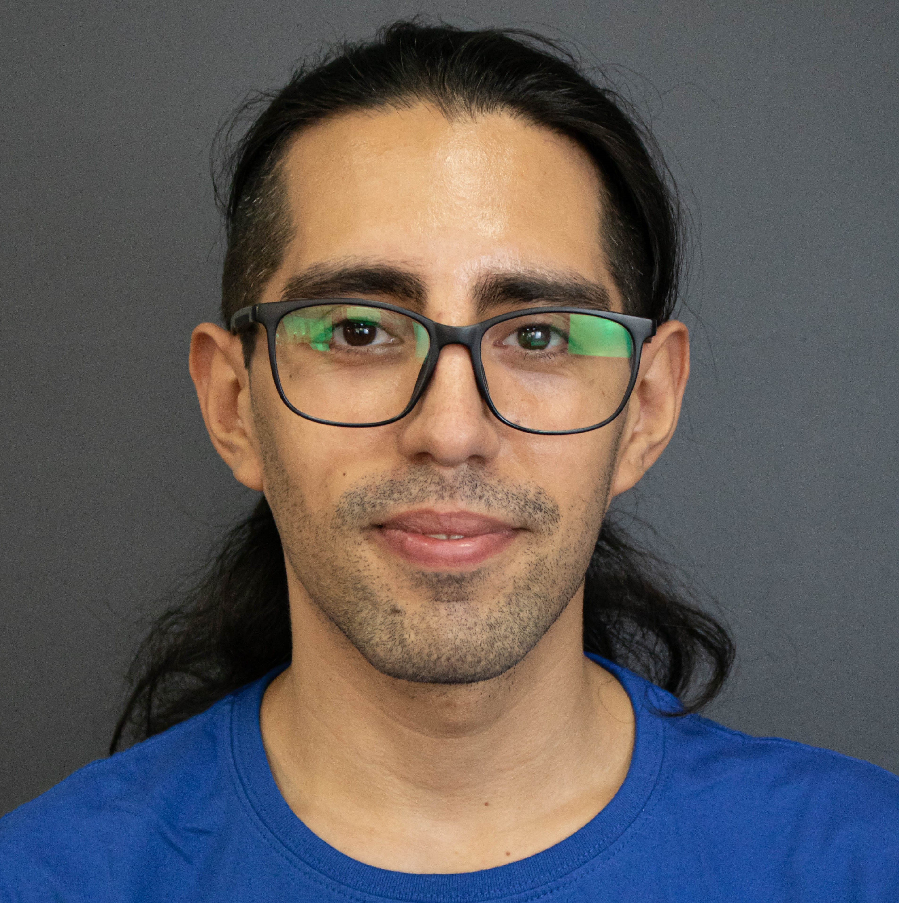

Wladimir Rojas
San Bernardo, RM, Chile
+56930229752 | wladimir.a.rojas@gmail.com

Perfil Profesional
Programador Java Junior Full Stack con especialización el stack Spring Boot y React. Experiencia de cinco años trabajando en videovigilancia
y un año de dishwashing. Capacidades de para trabajar en equipo,
liderezgo, orientación al detalle, persistencia, responsabilidad, puntualidad.
Hobby
- Taekwondo
- Lectura
- Escritura
- Ciclismo
- Diseño 3D
Educación
- Programa Generation, Santiago, CL - Abril-Julio 2022
Desarrollo de habilidades blandas y técnicas para el área TI. Proyecto final grupal. Codificación en lenguajes de programación, modelado de bases
de datos, utilización de Frameworks, entendimiento del desarrollo de proyecto. Desafíos
grupales de desarrollo, práctica de habilidades blandas.
- Programa 1000 Programadores Sence - Agosto 2017 - Enero 2018
Desarrollo de habilidades técnicas, matemáticas, bases de datos, lenguajes de programación, mockups.